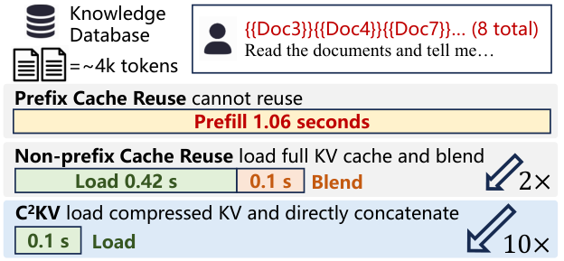
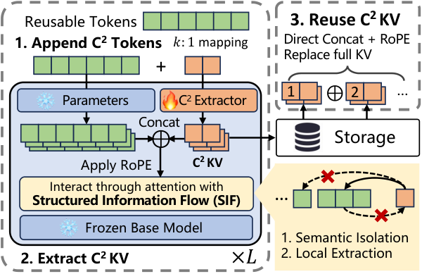

目录 · 10 节
1它到底在解决什么问题？2整体流程：抽取、存储、拼接3C2 token：用额外的“记忆槽”承载压缩信息4为什么需要“结构化信息流”？5拼接时位置怎么处理？6训练：压缩和拼接一起学7实验结果：真的又快又准吗？8我认为它的局限9一个推理服务团队可以怎么试10结论与评价做长上下文推理服务、尤其是 RAG 服务的团队值得读。它指出了一个容易被忽视的事实：复用文档的 KV 缓存时，真正的瓶颈已经从“重新计算”变成了“把大块缓存从内存搬到显卡”。核心思想一句话：给冻结的大模型外挂一个小模块，把每篇文档的 KV 缓存压缩成四分之一，而且压缩后的缓存可以按任意顺序直接拼接，不用再做修补计算。论文图 1 的例子里，8 篇文档的首字延迟从完整预填充的 1.06 秒降到只需加载的 0.1 秒；在 Llama3.1-8B 上，4 倍压缩后 MuSiQue 多跳问答得分是 0.3587，反而高于完整计算的 0.3198。
它到底在解决什么问题？
先说背景。大模型处理输入时要先做一遍“预填充”，为每个 token 算出注意力用的键和值，存起来就是 KV 缓存。输入越长，预填充越慢。RAG 服务每次都要把几篇检索到的文档塞进输入，同一篇文档会被不同请求反复用到，自然想到把文档的 KV 缓存提前算好、存起来复用。
难点在于文档出现的位置不固定。一个例子（示意）：知识库里有文档 3、4、7，请求 A 按“3、4、7”的顺序用，请求 B 按“7、3”的顺序用。
| 复用方式 | 请求 B 能复用什么 | 代价 |
|---|---|---|
| 前缀缓存（vLLM 默认） | 只有开头完全相同才能复用，B 的开头是文档 7，复用不了 | 整段重新预填充 |
| 非前缀复用（如 CacheBlend） | 文档 7、3 各自的缓存拿来拼接，再挑一部分 token 重新计算来修补 | 要加载完整缓存，还要修补 |
| C2KV | 加载压缩后的缓存，直接拼接 | 只有加载 |
为什么非前缀复用要修补？文档 3 的缓存是单独计算的，它没“看到”前面的文档 7，和真正连在一起计算的结果有偏差。CacheBlend 这类方法会挑一部分 token 重新计算来缩小偏差，挑得越少，偏差越大。

图 1 揭示了关键问题：即使修补很快，加载完整缓存本身就要 0.42 秒。缓存通常放在主机内存里，用时再搬到显卡，上下文越长，搬运越成为主要开销。很自然的想法是把缓存压缩，但作者的实验显示，把通用压缩方法 SnapKV 直接叠到复用方法上，准确率会大幅下降。原因是压缩后的缓存和原来的上下文绑得更紧，换个位置拼接就更不对了。
整体流程：抽取、存储、拼接

- 离线抽取：每篇文档单独送进“冻结的大模型 + C2 抽取器”，产出压缩后的 KV，也就是 C2KV（可压缩、可组合的 KV 缓存，论文方法名），存起来。
- 在线拼接：请求来了，取出需要的几篇文档的 C2KV，按它们在输入里的位置重新加位置编码，直接拼起来，再接上用户问题开始生成。
设计上的分工是：抽取器负责把文档压成“放在哪都能用”的缓存，推理时只负责搬运和拼接，不做任何修补。下面拆开讲。
C2 token：用额外的“记忆槽”承载压缩信息
怎么把 4000 个 token 的缓存变成 1000 个？C2KV 在文档后面追加一批新 token，叫 C2 token。压缩比是 k 时，每 k 个文档 token 配一个 C2 token。所有 C2 token 共用同一个可学习的向量，本身不代表任何文字，作用就是一个空的记忆槽。
大模型原有的参数全部冻结，其中原有的查询、键、值投影只作用在文档 token 上。C2 token 有自己的一套可训练的查询、键、值投影矩阵，每层一套，参数量约为原模型的 10%。投影后的 C2 token 和文档 token 一起进标准注意力，之后的输出投影、FFN 等其余计算仍用冻结的原模型参数，论文只给 C2 token 单独设了查询、键、值投影。跑完之后，只保留 C2 token 的 KV，原文档 token 的 KV 丢掉。以 k=4 为例（示意）：一篇 4000 token 的文档，存下来的只有 1000 个 C2 token 的 KV，体积是原来的四分之一。
为什么需要“结构化信息流”？
如果让 C2 token 和文档 token 随便互相看，压缩出来的缓存会和这篇文档的整体上下文缠在一起，拼到别的位置就不准了。C2KV 用注意力掩码定了三条规则： Hoot 说

- 槽看到的文档格
- 槽看到的文档格
- 槽之间：因果
- 文档看文档：原模型的因果掩码，不变
- sink 块 B(0)：每个槽都看
- 槽可见：自己那块 + 前面的槽（含自己）
- 被遮住
- 槽看到的文档格（示意，3 个槽、12 个 token、每块 k=4）：普通因果 3×12 = 36 格；C2KV 只有 sink + 自己那块，槽1 是 4 格（自己那块就是 sink），槽2、槽3 各 8 格，共 20 格。
- 规则 2 看槽2那一行：块1（sink）+ 块2 可见，块3 被遮住，所以它总结的是第 5 到第 8 个 token，看不到第 9 个以后。
行是查询，列是键。示意：k=4，文档 3 块共 12 个 token、3 个槽；把槽排在文档后面只是为了画图。第 1 个槽负责的块就是 sink 块本身。 出处: 本文“结构化信息流”一节的三条掩码规则与 k=4 例子（按官方代码，sink 块 B(0) 即文档第 1 块）
- 文档 token 看不到任何 C2 token。这样文档 token 的计算和原模型完全一样，不会被改动。
- 每个 C2 token 只看自己负责的那 k 个文档 token，再加上论文记作 B(0) 的“sink 块”。sink 块也是原文 token，不是额外添加的。按官方代码的实现，它就是文档最前面的 k 个 token，也就是第 1 块本身，不额外占槽：k=4 时是第 1 到第 4 个 token，第 1 个槽本来就看它，第 2 个槽看第 1 到 4 和第 5 到 8 个 token，第 3 个槽看第 1 到 4 和第 9 到 12 个 token。大模型的注意力往往大量集中在序列最开头的 token 上，所以每个槽都保留对这一块的可见性，其余文档块一律看不到。
- C2 token 可以按顺序看前面的 C2 token，这样后面的槽能积累前面段落的信息。
用 k=4 举例（示意）：第 2 个 C2 token 只汇总文档第 5 到第 8 个 token，加上第 1 个 C2 token 已经汇总好的信息，看不到第 9 个以后的内容。每个槽只总结自己那一小段，所以拼到哪里都不会带着错误的“前文”。
拼接时位置怎么处理？
KV 缓存里通常已经带着位置信息（RoPE 旋转位置编码）。C2KV 在存储时保存的是加位置编码之前的 KV，推理时再根据文档在新输入里的位置重新加。抽取时，第 j 个槽的位置号取它负责那段最后一个 token 的位置，k=4 时第 1 个槽是 3，第 2 个是 7，依此类推。拼接时，每段压缩缓存按原文的长度占位置，后面的文档整体加上累计偏移：第一篇文档原来 400 个 token（示意），压缩成 100 个槽，位置号是 3、7、…、399，第二篇文档仍然从位置 400 开始排，它的第 1 个槽是 403。这样模型看到的位置关系和读完整原文时一致。
训练：压缩和拼接一起学
抽取器怎么学会产出“能拼接”的缓存？训练数据是多文档问答，来自 HotpotQA、2WikiMultiHopQA 和 LongMagpie。每条样本里，各文档先单独抽取 C2KV，再拼接起来，让模型基于拼接后的缓存回答问题，只用回答的语言模型损失训练抽取器。
由于每条样本里文档的数量和顺序都不同，抽取器只有学会产出在各种组合下都能用的缓存，损失才会降下来。压缩过头、拼接后答不对的缓存，会被这个损失惩罚。
实验结果：真的又快又准吗？
下表摘自论文表 1，Llama3.1-8B。MuSiQue、2WikiMQA 是问答任务，分数是 F1（模型答案和标准答案的词重合程度）；SAMSum、MultiNews 是摘要任务，分数是 ROUGE-L（生成摘要和参考摘要按最长公共子序列算的重合程度）。分数都在 0 到 1 之间，越高越好：
| 方法 | MuSiQue | 2WikiMQA | SAMSum | MultiNews |
|---|---|---|---|---|
| 完整计算 | 0.3198 | 0.4018 | 0.3652 | 0.2685 |
| 直接复用不修补 | 0.1970 | 0.2681 | 0.3172 | 0.2674 |
| CacheBlend | 0.2720 | 0.1334 | 0.3379 | 0.2126 |
| C2KV 4 倍压缩 | 0.3587 | 0.4477 | 0.3904 | 0.2532 |
| C2KV 16 倍压缩 | 0.2746 | 0.3973 | 0.3556 | 0.2234 |
4 倍压缩时，三项问答和对话摘要任务都超过了完整计算。这说明抽取器在多文档问答上的训练，不只是保住了信息，还让模型更会利用多篇文档。压缩到 16 倍，大部分任务仍高于 CacheBlend。
消融实验验证了每个设计。去掉位置重新对齐，Qasper 得分从 0.3755 降到 0.2827；把结构化信息流换成锚点 token，降到 0.2750。锚点 token 是另一类压缩方法用的额外 token，它和文档 token 双向互相看，文档 token 的表示也会被锚点改写，结果缓存和整段上下文缠在一起。位置对齐和信息隔离缺一不可，压缩缓存能拼接是设计出来的，不是自然成立的。
解码阶段也受益：上下文从 16k 增长到 128k 时，完整缓存的每 token 解码时间近乎线性增长，C2KV 的曲线则平缓得多，因为每生成一个 token 要读的缓存少了四分之三。
我认为它的局限
第一，每个基础模型都要单独训练抽取器。论文在 Qwen3-4B、Llama3.1-8B、Qwen2.5-7B 和 Qwen3-14B 上做了实验，模型版本一更新，抽取器就得重训，还要准备多文档问答数据。
第二，摘要类任务有损失，而且压缩比和效果的关系不稳定。MultiNews 上 4 倍压缩是 0.2532，低于完整计算的 0.2685，说明需要通读全文的摘要任务更吃亏。SAMSum 上 8 倍压缩只有 0.2572，16 倍反而回到 0.3556，这意味着压得越多不一定越差，但也不能按压缩比线性预估效果，上线前要按自己的任务逐个压缩比测。
第三，训练数据集中在问答。抽取器学到的是“对回答问题有用的信息”，而不是忠实还原原文。抽取器在多跳问答上的提升最明显，代码、表格、长对话等文档类型能否同样受益，论文的评测覆盖不到。
一个推理服务团队可以怎么试
- 先量瓶颈：在自己的 RAG 服务里拆分首字延迟，看加载缓存和预填充各占多少。加载占大头时，这类方法才有意义。
- 选一个高频复用的文档库，用官方代码在当前基础模型上训练 4 倍压缩的抽取器，对比完整计算和现有复用方案的答案质量。
- 按任务类型分别评估：问答和摘要分开看，摘要掉分明显时，可以只对问答请求启用。
- 再试更高压缩比，重点看显存和带宽节省能否换来更大的批量或更长的上下文。
结论与评价
最关键的启发是：KV 缓存复用的下一步不是算得更少，而是搬得更少，而要压缩得动，缓存必须从一开始就为拼接而设计。
| 维度 | 评价 |
|---|---|
| 问题重要性 | 高。长上下文和 RAG 服务里，缓存的存储和搬运正在成为主要开销 |
| 方法创新性 | 中高。把压缩和非前缀复用放进同一个训练目标，用注意力掩码保证可拼接，思路清楚 |
| 实验证据 | 中。三个模型家族、多项长文本任务、消融完整，但摘要任务有损失，压缩比效果有波动 |
| 工程成本 | 中。原模型冻结，但每个模型要训练约 10% 参数量的抽取器，并改造推理侧的缓存拼接 |
| 是否值得尝试 | 值得。文档复用率高、加载缓存占首字延迟大头的 RAG 服务可以优先试 |
读完这篇，你觉得
夜读鸮记下了，谢谢你的反馈。
点一下即可，无需登录；再点一次撤回。只统计匿名次数，不记录你是谁。
讨论
欢迎补充实验细节、复现经验或不同看法。需 GitHub 登录。
正在加载讨论…